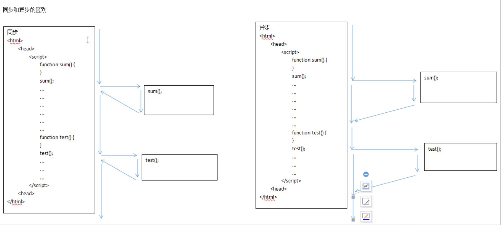

AJAX
AJAX的概述
阿贾克斯，AJAX是异步的JS和XML，
AJAX并不是一种新的编程语言，AJAX是一种使用了现有标准的新方法，
AJAX是一种JS与WEB服务器交互的技术，
AJAX可以让页面在不需要重新加载的情况下，实现页面内容的更新。
学习AJAX必须掌握的技术
HTML
CSS
JS/DOM/jQuery
同步和异步的区别

AJAX的入门案例
创建请求对象
设置请求转改变化时所触发的时间
创建连接(请求方法，请求地址，请求模式)
发送请求
1 | <input type="button" value="按钮" onclick="sendAJAX();"> |
AJAX提交数据至服务器
1 | <script> |
AJAX提交获取数据的乱码处理
new String
req.setCharacterEncoding
resp.setContentType
校验用户名是否重复
传统方式
JSP
1 | <form action="${pageContext.request.contextPath}/RegisterServlet" method="post"> |
Servlet
1 | protected void doGet(HttpServletRequest req, HttpServletResponse resp) |
Service
1 | public boolean checkUsername(String username){ |
Dao
1 | public User findUserByUsername(String username) { |
AJAX方式
1 | <script type="text/javascript"> |
JQuery的AJAX实现
$,jQuery
ajax()
参数
{
type : 设置请求的类型，常用的有GET和POST
url : 设置请求的地址
data ：设置POST方式提交的数据
success ：请求响应完成后要执行的方法
}
{}
JS中的{}对象
{}代表一个对象
属性：
{属性名称：属性值，属性名称2：属性值2}
var stu = {name : “zhangsan”,age : 18}
stu,name
方法
{方法名:function(){}}
var stu = {sum:function(a,b){return a + b;}}
stu.sum()
JQuery的AJAX入门案例
1 | <script type="text/javascript"> |
JQuery的其他AJAX方法
1 | <script type="text/javascript"> |
展示所有学生的信息
1 | protected void doGet(HttpServletRequest request, HttpServletResponse response) throws ServletException, IOException { |
1 | <script type="text/javascript"> |
JSON的概述
是一种轻量级的数据交互(传输)格式
jQuery的ajax接收数据的格式
普通文本
xml
1 | 表示一个对象 |
json
1 | 表示一个对象 |
1 | ajax |
展示所有学生信息(JSON)
1 | protected void doGet(HttpServletRequest request, HttpServletResponse response) throws ServletException, IOException { |